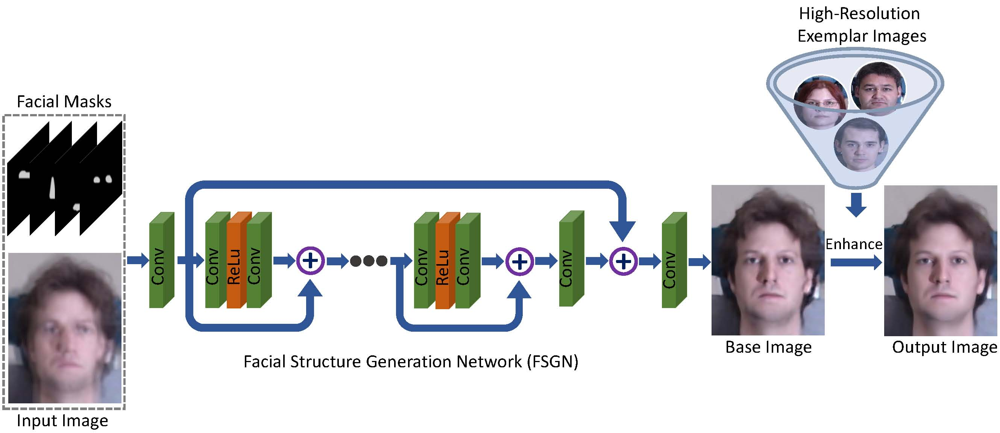

Joint Face Hallucination and Deblurring via Structure Generation and Detail Enhancement
Yibing Song1
Jiawei Zhang2
Lijun Gong3
Shengfeng He4
|
|  |
Abstract
We address the problem of restoring a high-resolution face image from a blurry low-resolution input. This problem is difficult as super-resolution and deblurring need to be tackled simultaneously. Moreover, existing algorithms cannot handle face images well as low-resolution face images do not have much texture which is especially critical for deblurring. In this paper, we propose an effective algorithm by utilizing the domain-specific knowledge of human faces to recover high-quality faces. We first propose a facial component guided deep Convolutional Neural Network (CNN) to restore a coarse face image, which is denoted as the base image where the facial component is automatically generated from the input face image. However, the CNN based method cannot handle image details well. We further develop a novel exemplar-based detail enhancement algorithm via facial component matching. Extensive experiments show that the proposed method outperforms the state-of-the-art algorithms both quantitatively and qualitatively.
Downloads
| [FHD.pdf] | : The paper. |
| [Results.zip] | : Benchmark results. |
BibTex(DOI)